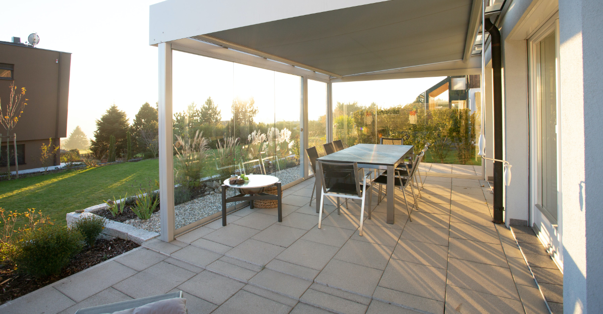

Die Terrasse ist der Ort an dem man sich nach einem anstrengenden Arbeitstag erholen kann und in einer lauen Abendstunde zur Ruhe kommt.
Wir entfernen umweltschonend auch hartnäckige Verschmutzungen wie Moos, Algen, Ruß und andere Verschmutzungen. Sie werden staunen wie sauber Ihre Terrasse durch unsere Reinigung werden kann.
Wir arbeiten mit Hochdruck-Wasser-Technik, mit diesem Verfahren erreicht man ein sehr gutes Ergebnis. Nach der Reinigung empfehlen wir Ihnen Ihre Terrasse vor neuen Verschmutzungen zu schützen, hierzu bieten wir Ihnen eine Imprägnierung auch mit Farbvertiefung an. Terrassen Reinigung muss sensibel durchgeführt werden um angrenzende Wände, Bepflanzung usw. nicht zu beschädigen. Wir sind Spezialisten für Terrassen- und Steinreinigung.

"Feines Sommerwetter,
feine Sonnenterrasse,
feiner Cocktail,
feine Menschen,
feines Gefühl."
- Volker Harmgardt, Schriftsteller